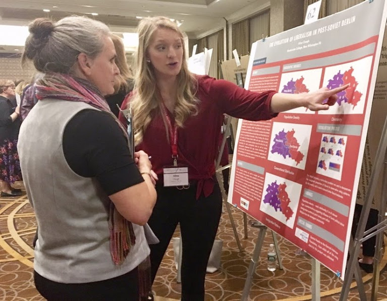

About Me

My name is Alina and I'm currently pursuing a Master in Public Policy degree at the Harvard Kennedy School of Government. I graduated from Westminster College, PA in 2018 with a degree in International Politics and a focus on database/cartographic research. In my previous life I was a GIS geek and local government project manager and web developer, where I helped modernize this site and others in my hometown of Buffalo, New York.
Following grad school my goal is to do something at the intersection of tech and public service, ideally working to build software solutions for public sector clients.
Student Researcher with Harvard's Belfer Center
This year I've been working with a project through Harvard's Belfer Center for Science and International Affairs called Defending Digital Democracy. The project is a bipartisan initiative focused on securing U.S. elections, and most centrally focuses on running "fire drills" called TTX's to simulate cyber security and misinformation issues. The project was featured in The Washington Post, The New York Times, and cyber-specific outlets for its work with both parties prior to the 2020 Iowa Caucus.
Buffalo, NY Club Facilitator
While living in Buffalo I helped establish and faciliate a brand new chapter of Girls Who Code. If you're not familiar, Girls Who Code is a pretty incredible initiative focused on teaching girls from 3rd grade on computer science and exposing them to female role models in the field.
Research Intern
During the time I spend as a Congress-Bundestag fellow, I worked with team Digitalization and team Economic Policy in the Politics and Consulting arm of the Konrad Adenauer Foundation. My work there centered around strategizing how Germany could benefit from digitalization by lowering barriers for startups in the German economy.
Volunteer Cartographer
Although I'm now "off the map," one project I was especially passionate about for years was helping to chart unmapped areas for humanitarian purposes. I worked primarily with the Tanzania Development Trust, which used the maps to help create escape routes for girls avoiding female genital mutilation.